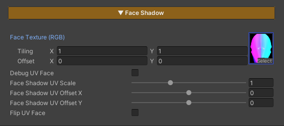

Face Shadow
FaceShadow Off
FaceShadow On
Correct Face UV (Debug)
FaceShadow On

Face Shadow is designed to be flexible and works with a wide variety of characters, regardless of how their face UVs are set up.
It also includes a Face Shadow Paint texture that can be reused across multiple characters, so you don’t need to switch textures frequently.
Parameters
- Face Texture : Assign a texture to define lighting and shadow on the face
- Debug UV Face : Enable this to set up or check the face UV on your character
- Face Shadow UV Scale : Adjust the scale to make it larger or smaller
- Face Shadow UV Offset X : Adjust the offset on the X axis to align it correctly
- Face Shadow UV Offset Y : Adjust the offset on the Y axis to align it correctly
- Flip UV Face : Used to flip the UV on the Y axis in case the UV is upside down